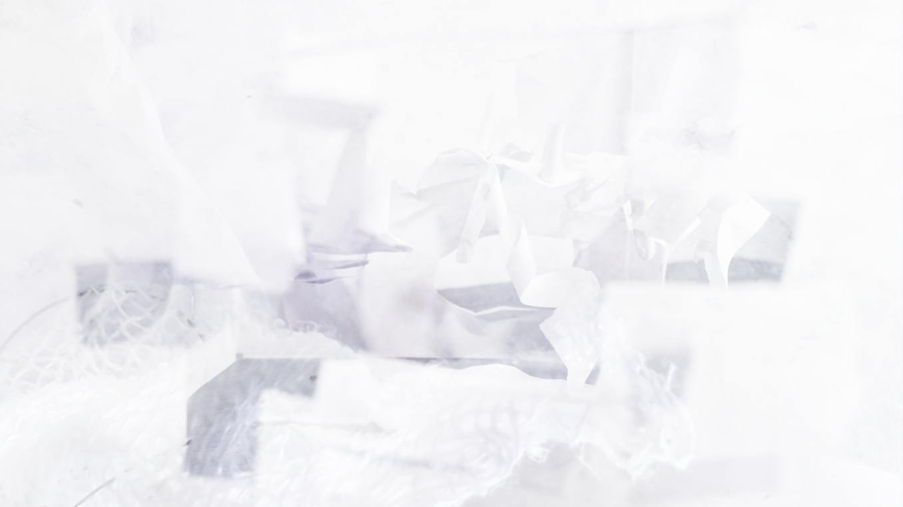

The Pre Prototype
A de-formed version of my first paper model, created to test placement and key spatial ideas for my imagined Innisfree landscape.
Explore Model
A collection of scanned 3D models documenting the evolution of
The Isle, capturing my project's progression through
material experimentation, form-making and digital transformation.
Select a model to explore:
drift through its forms, pause on details or place it within
your surroundings using AR.

A de-formed version of my first paper model, created to test placement and key spatial ideas for my imagined Innisfree landscape.
Explore Model
A fragile form made from layered paper. When scanned, it becomes sharper and more solid, revealing an unexpected structure.
Explore Model
Developed from The Element. Combines soft materials with a rigid wire base, exploring contrast between stability and fragility.
Explore ModelThis mini portfolio presents a collection of 3D models I developed during my design process for Re-Imagining Innisfree. It traces the project's evolution from early explorations to more resolved, though still unfinished, stages. Each model represents a moment in that journey, reflecting my ongoing investigation into material, form and spatial thinking.
In this work, I explore how delicate, handmade models transform when seen through the lens of a camera and digital processing. Created through touch, intuition and an engagement with material qualities, my physical models are layered, fragile and ephemeral. When translated into digital form, they take on a different character: the camera sharpens and re-interprets them, turning them into prompts for further transformation.
Working digitally also allows me to explore scale. Through augmented reality (AR), the models can be placed within space, suggesting how they might be experienced as physical environments.
These scanned Isle forms act, for me, as a thinking tool for imagining a final spatial experience, inspired by both the poem and the physical Isle of Innisfree.